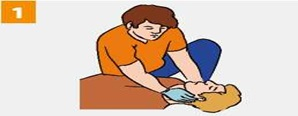
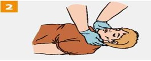

АЛГОРИТМ ПОДРОБНОГО ОСМОТРА ПОСТРАДАВШЕГО
Подробный осмотр производится с целью выявления признаков травм, отравлений и других состояний, угрожающих жизни и здоровью пострадавшего.

|
Осмотри голову пострадавшего. Делай это максимально осторожно и аккуратно! |

|
Выполни осмотр шеи пострадавшего. |
Внимательно и осторожно осмотри грудь и спину пострадавшего. |
|
Выполни осмотр живота и таза пострадавшего, действуй бережно и внимательно! |
|
Осмотри каждую руку пострадавшего. |
|
Выполни подробный осмотр ног пострадавшего. |
При выявлении травм и других состояний, угрожающих жизни и здоровью пострадавшего, выполни соответствующие мероприятия первой помощи.
Источник:
http://www.culture.mchs.gov.ru/medical/
ТЕЛЕФОН СЛУЖБЫ СПАСЕНИЯ: 112